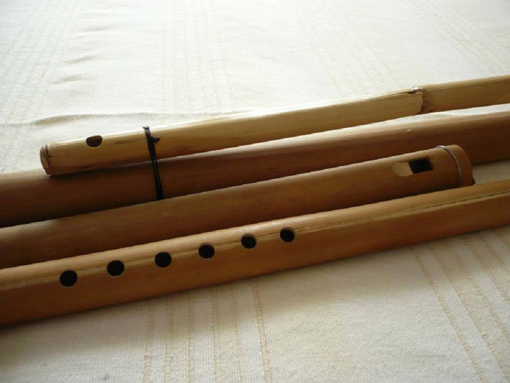

Mohoceño: When Toponymy Becomes Instrument
Note 022
Home > Blog A Musician's Log > Note 022
A Name from Mohoza
The pinkillo mohoceño, commonly known simply as mohoceño, and also spelled mohoseño, moseño, or moxeño, is one of the most physically imposing flutes in the Aymara musical world. Made from tokhoro, a large bamboo obtained from the valleys of La Paz, in Bolivia, it belongs to the family of duct flutes, traditionally called pinkillo in the Andes. It is constructed in several sizes and traditionally played in large groups called tropas, rather than as a solo instrument.
Its name does not describe its material, its mechanism, or its sound. It points toward a place.
The instrument is closely associated with Mohoza, in the province of Inquisivi in the department of La Paz. Although the precise birthplace of a traditional instrument is almost impossible to establish, local testimony and official heritage discourse repeatedly identify Mohoza, also called Muxsa Marka, as the place from which the mohoceño and the mohoceñada associated dance emerged.
In Spanish, mohoceño means, in its most immediate sense, "from Mohoza."
The instrument carries a place in its mouth.
Architecture of Length
The mohoceño is constructed in several cortes, or size categories. Among the forms commonly used in contemporary ensembles are the requinto, the erazo, and the salliwa. They do not simply reproduce the same instrument at different pitches. Their dimensions affect posture, fingering, air consumption, and their position within the collective sound.
The largest, the salliwa, can approach a metre and a half in length. Because the finger holes would be difficult to reach if the instrument were held upright, it is positioned transversely. An additional air channel carries the player's breath to the duct while the hands reach along the main tube. Smaller erazos and requintos are held vertically.
Organologically, the mohoceño is a longitudinal duct flute, classified as Hornbostel–Sachs 421.221.12. That number identifies its sound-producing mechanism. It says little about the physical negotiation required between lungs, hands, tube, and ensemble.
Viewed from a distance, such a long flute seems to promise a correspondingly low voice. The mohoceño behaves less predictably.
Aymara (and, in general, Andean) indigenous traditional technique relies heavily on overblowing. The usable tones may sound an octave, a twelfth, or more above the tube's fundamental. Experienced players can produce several upper components at once, together with the rough, saturated quality known in Andean musical terminology as tara. The result is high, dense, and internally layered despite the instrument's great dimensions.
Length becomes an acoustic reservoir. Breath releases altitude from it.
A Melody No One Can Complete Alone
The mohoceño is played in a docena or tropa. Contemporary formations commonly combine salliwas, erazos, and requintos whose voices relate through octaves, fifths, and fourths. The different sizes produce a broad collective register, but the ensemble also solves a more immediate physical problem.
The instrument requires an enormous quantity of air.
A single performer can possess all the fingerings needed for the melody and still be unable to sustain it in the expected manner. Blowing with sufficient pressure to activate the upper modes empties the lungs rapidly. Long notes break. Phrases acquire gaps. The melody becomes a sequence of disconnected pieces.
Players therefore work in pairs. One produces part of the phrase while the other breathes. The second enters as the first exhausts the available air. Unlike the complementary performance of many panpipe traditions, the notes are not divided between two instruments. Each mohoceño contains the same tonal possibilities. What is distributed is the burden of breathing.
The melody belongs to the pair before it belongs to either musician. Across the larger ensemble, these exchanges overlap. Individual performers may pause, omit notes, or enter only at particular moments, while the collective sound remains continuous. Separate lungs become one sustained acoustic body.
The ensemble turns interruption into continuity.
From Muxsa Marka to Mohoza
The place-name introduces another history.
Official Bolivian heritage legislation identifies Mohoza as "Muxsa Marka," while Spanish-language sources record the instrument as mohoceño or at least a dozen of graphic variants. However, museums, dictionaries, musicians, researchers, and cultural institutions have not settled on a single written form.
It would be tempting to treat each spelling as a transparent record of a particular historical pronunciation. The evidence does not support such a tidy sequence. What the documentation preserves is a field of competing normalizations: Aymara naming, Spanish spelling, local usage, academic transcription, and institutional cataloguing.
The variation is therefore neither meaningless nor completely decipherable. Some forms keep the visual relationship with Mohoza immediately apparent. Others compress or obscure it. Each catalogue entry, museum label, or publication chooses one route through the available spellings, even when that choice is presented as simple standardization.
The archive does not merely encounter the instrument. It decides how the place inside its name will be written.
Instrument as Toponymic Archive
A classification number places the mohoceño among duct flutes. Its name places it within a geography.
Neither form of identification is sufficient by itself. The organological category explains how the tube produces sound. The toponymic name connects it to Mohoza, the valleys of La Paz, Aymara communities, groups of makers and performers, and the rainy-season cycle in which the mohoceñada songs and dance has traditionally been heard.
Toponymy consequently becomes part of the instrument's documentary identity.
Calling it mohoceño does more than distinguish one flute from another. The word carries an assertion of provenance. It states that this architecture of bamboo, duct, finger holes, pressure, and collective breath belongs to a history situated somewhere.
The place does not survive inside the instrument as an untouched origin. It survives because the connection continues to be named.
What Persists
The earlier instruments were not identical to those played today. Older cortes were shorter and had more widely separated finger holes. Later makers adopted longer dimensions and brought the holes closer together, facilitating fingering and accommodating a broader repertoire. The salliwa's air channel, once made from tokhoro, is now frequently made from plastic. Some large instruments are constructed in two sections so they can be transported more easily.
The body is no more stable than the spelling. Both have been adjusted, rebuilt, and transmitted through changing conditions. What persists is the relation among instrument, place, maker, performer, season, and collective sound.
The name changes. The flute changes. Mohoza remains audible between them.
Readings
- Borras, Gérard (1995). Les aérophones traditionnels aymaras dans le Département de La Paz (Bolivie). PhD diss., Université de Toulouse le Mirail.
- Civallero, Edgardo (2025). Pinkillos. Bogotá: El Zorro de Abajo Editora.
- Ferrier, Claude (2021). Los enigmas del moceño: ¿mitos o realidades? Generación del sonido en un instrumento aymara. Revista Musical Chilena 75 (236), pp. 62-97.